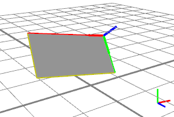
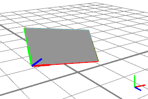
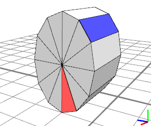
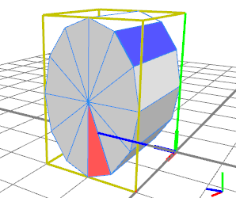
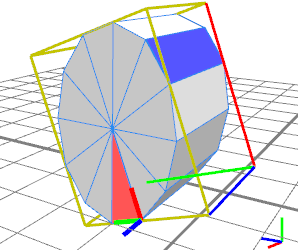
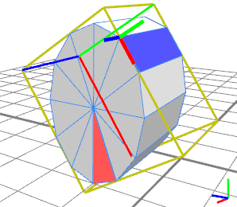
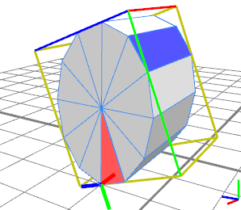

|
|
alignScopeToGeometry
Synopsis
alignScopeToGeometry(upAxisSelector, float faceIndex, float edgeIndex)
alignScopeToGeometry(upAxisSelector, faceSelector, edgeIndex)
alignScopeToGeometry(upAxisSelector, faceIndex, edgeSelector)
alignScopeToGeometry(upAxisSelector, faceSelector, edgeSelector)
Parameters
- upAxisSelector (selstr)
yUp, zUp (Note:xUp not supported yet) - faceIndex (float)
0-based index of face which contains the edge. Negative indices are modulo-adjusted, i.e. -1 is the last face. - edgeIndex (float)
0-based index of edge which will become the new x-axis. Negative indices are modulo-adjusted, i.e. -1 is the last edge. Note that the edge index is relative to the selected face! - faceSelector (selstr)
- world.lowest: takes the face with lowest y world-coordinates.
- largest: takes the largest face.
- any (only in combination with an edgeSelector): takes the face for which the edge selector has extremal value.
- edgeSelector (selstr)
- world.lowest: takes the edge with lowest y world-coordinates.
- longest: takes the longest edge.
 The alignScopeToGeometry operation manipulates the scope, the pivot and
the geometry attributes in the following way:
The alignScopeToGeometry operation manipulates the scope, the pivot and
the geometry attributes in the following way:
1. select new pivot axis directions (defined by upAxisSelector and the selected face and edge, see below)
2. calculate the oriented bounding box (OOB) for the geometry along these axes and set pivot.p to
the origin of the OOB. The new scope dimensions are set to the OOB.
3. transform the geometry into this new coordinate system.
The parameters let you choose an edge of a face in the geometry. The new x-axis of the scope
will be parallel to this edge, and the up-axis will be the face's normal.
The geometry is projected to the new scope (i.e. stays at the same place in world coordinates).
Related
Examples
Aligning to the lowest edge
|  | A--> comp(f){ 25 : Faces }
The initial scene: After a face component split, the scope (and pivot, fat) happen to be positioned such that the y-axis points towards the ground. |
|  | A--> comp(f){ 25 : Faces }
alignScopeToGeometry(zUp, any, world.lowest) Applying alignScopeToGeometry() with the any and world.lowest selectors guarantees that the y-axis of the scope points upwards. This is very useful e.g. for placing bricks on a roof. |
Basic usage
|  | A -->
s(2,3,2)
i("cylinder.obj")
B
comp(f){
0: color("#ff0000") t(0,0,0.01) X |
32: color("#0000ff") t(0,0,0.01) X }
The initial scene: A mesh is inserted and two faces highlighted by applying a component split. |
|  | The same scene, with scope and pivot of shape B highlighted. |
|  | B -->
alignScopeToGeometry(zUp, 1)
After alignScopeToGeometry(),the pivot's (and the scope's) x-axis points along edge 1 of face 0 (red); the z-axis points along the face normal and the x-axis is normal to the two others. The pivot is positioned at the edges starting point and the scope is the pivot-aligned bounding box of the geometry. |
|  | B -->
alignScopeToGeometry(yUp, 32, 2)
Here, the second edge of face 32 (blue) is used, and the face-normal becomes the new y-axis. |
|  | B -->
alignScopeToGeometry(yUp, any, world.lowest)
In this case, "any" and "world.lowest" select the edge with lowest y-position (in world coordinates), which becomes the new x-axis, and the corresponding face-normal becomes the new y-axis (because of the yUp selector). |
Copyright ©2008-2016 Esri R&D Center Zurich. All rights reserved.